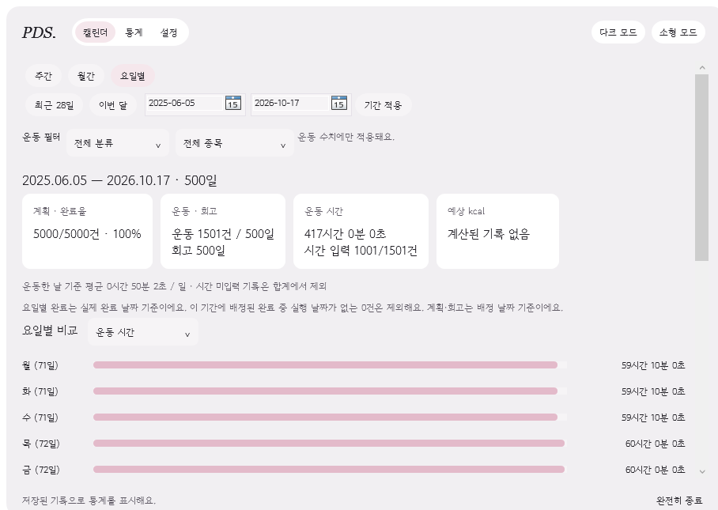

2차 검증 결과와 남은 확인
개인 기록과 분리한 검사 데이터로 확인한 결과입니다. 실제 사용자 점검과 자동 검사를 구분합니다.
어떤 내용을 확인했나요?
- 계획·운동·회고 저장과 수정·삭제, 잘못된 입력 거부와 미저장 입력 보호.
- 앱을 완전히 종료한 뒤 새 프로세스에서 기록 복구.
- 16일23:59 운동의 당일 집계와 자정 이후 지난 날짜의 운동 입력.
- 명상 종료·건너뛰기·5분 완료 뒤 오늘 미완료만 표시하고 팝업을 닫아도 기록·초안 유지.
- 별도 시험 아이콘의 실제 등록, 등록 실패 시 작업 표시줄 최소화와 초안 복원.
- 라이트·다크, 고정 창·상세 유무·4/5/6주 전체 표시, 글자 확대·실제 글자 높이와 입력 접근.
명상 타이머 보완
숫자 폭과 높이·배치를 고정했습니다. 현재 고정 창의 라이트·다크2개 환경에서 05:00부터 00:00까지 301개 값을 각각 검사했습니다.
많은 기록과 상주 자원 측정
아래30분 측정은 기념일·고정 창·글자 확대 추가 전 빌드의 과거 결과입니다. 현행204개 화면 검증 빌드의 성능으로 바꾸어 제시하지 않습니다. 당시 소형 모드는 현재 제거되었습니다.
이전 빌드의30분 상주 측정 자료를 불러옵니다.
500일의 가상 기록으로 계획5,000건·운동1,500건·회고500일을 만들고 당시 일반·소형·트레이·통계를 각각20초 준비 후5분 측정했습니다. 화면은 비활성 상태로 화면 밖에 있으며 실제 마우스 조작이나 로그인 등록은 하지 않았습니다.
| 상태 | 평균 CPU | 작업 메모리 | 개별 메모리 |
|---|---|---|---|
| 이전 빌드 측정 파일을 불러옵니다. | |||
CPU는 전체 논리 프로세서 기준으로 나눈 프로세스 사용률입니다. 메모리 단위는 MiB이며 작업 메모리(Working Set)와 개별 메모리(Private Bytes)를 구분합니다. 초기 작업 메모리 목표150MiB 달성을 자동으로 주장하지 않으며 실제 일상 사용의 모든 비용을 포함한 측정은 아닙니다.

사용자에게 확인받은 결과
본인이15개 항목을 점검해12개 기본 동작을 확인했고3개는 미확인 또는 설명이 필요하다고 기록했습니다. 모드 전환·강조색은 동작 확인과 함께 사용성 보완 의견이 있었습니다. 이후 작성자는 트레이 복원·타이머·운동 통계·재실행 성공을 보고했고, 최신 고정 창의 크기·상세 비율·글씨 확대·달력 배치도 수용했습니다. 이를 모든 기능 전수 시험이나7일 사용으로 확대하지 않습니다.
남아 있는 확인
실제7일 사용과 추가 참여자, 로그인 자동 실행·절전 복귀·다중 모니터·다양한 배율·Windows 셸 재시작 등 환경별 복원은 후속 과제입니다. 소형·항상 위·크기 전환은 현재 제거했습니다. 예상 kcal은 활동 기준을 이용한 추정이며 실제 소비량을 계측한 결과가 아닙니다.
자세한 원고와 근거는 저장소의 검증 보고서에서 확인할 수 있습니다. 공개 다운로드와 저장소 자료는 업로드를 마친 뒤 확인하세요.